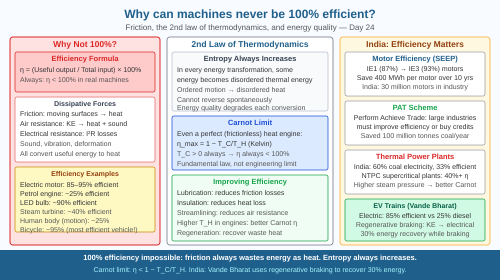

By the end of this lesson, you should be able to explain why 100% efficiency is impossible, describe the role of friction and entropy, and predict how lubrication affects machine efficiency.
Electric motors are 90%+ efficient. Solar panels reach 25%. The human body: ~25% for movement. Steam engines: ~15%. Internal combustion: ~25%. Why can't engineers simply make machines that waste nothing? What fundamental law prevents perfect efficiency?
Efficiency = (useful output energy / total input energy) × 100%
Why 100% is impossible — friction: All moving parts experience friction. Friction converts kinetic energy to thermal energy. Thermal energy disperses randomly into the environment — it cannot be recovered and redirected back into useful work (without violating the Second Law of Thermodynamics).
Second Law of Thermodynamics: In any energy transformation, entropy (disorder) always increases. Useful ordered energy (kinetic, potential) naturally degrades to disordered thermal energy. You cannot "undo" this without expending MORE energy.
Carnot efficiency limit: Even in a perfect (frictionless) heat engine: η_max = 1 − T_cold/T_hot (temperatures in Kelvin). For any real engine with T_cold > 0 K: η < 100%.
Dissipative forces: friction, air resistance, electrical resistance (I²R losses in wires), sound generation, material deformation. All convert useful ordered energy to dispersed heat.
Simple machines (pulley, lever, inclined plane): Also lose energy to friction at pivots, rope bending, surface deformation. Mechanical advantage trades force for distance but cannot improve the energy efficiency of a system — you always get out less than you put in.
Think of a machine as a water wheel driven by a river. Some water flows over the wheel and does useful work (turning the wheel). But some water splashes sideways, some evaporates, some soaks into the wood — energy leaves the system as heat and scattered motion. The wheel can never extract 100% of the river's energy because some always escapes in uncontrolled directions.
No matter how carefully you design the wheel, some energy escapes in a direction that cannot be redirected into useful rotation. This is not an engineering failure — it is a law of nature.
The included SVG shows a Sankey diagram for three machines side by side. The first (electric motor, IE3 grade) shows 100 J input splitting into 93 J useful mechanical output and 7 J heat. The second (internal combustion engine) shows 100 J splitting into 25 J mechanical output and 75 J heat. The third (human muscle) shows 100 J chemical energy splitting into 25 J mechanical work and 75 J body heat. Below the three diagrams, a single large arrow labelled "Second Law" spans all three, with text: "In every case, heat loss > 0." A separate inset shows a gear pair with a red zone at the gear teeth labelled "friction → heat" and arrows showing where the heat disperses into surrounding air.

India's industrial sector consumes ~40% of national electricity. Poorly maintained motors and pumps operate at 30–50% efficiency. BEE's Super-Efficient Equipment Programme (SEEP) subsidises premium efficiency motors — the difference between IE1 (standard, 87%) and IE3 (premium, 93%) efficiency over 10 years saves 400 MWh per motor. India has ~30 million motors — if all were upgraded to IE3, the national savings would equal the output of several large power plants. India's Perform Achieve and Trade (PAT) scheme requires large industries to meet efficiency targets or buy energy-saving certificates, making efficiency a tradeable commodity.
Compare two fans — one dusty (dirty blades, old bearings) and one clean. If a watt-meter is available, measure power consumption of both at the same speed setting. The dusty fan uses more power for the same airflow — more of its input goes to overcoming friction from worn bearings and aerodynamically disrupted blades. If no watt-meter is available, hold your hand in front of each fan at equal distance and compare the airflow. Clean the dusty fan's blades and check again. Real engineers do exactly this: industrial motor efficiency programmes in India have targeted fan and pump upgrades as the single largest energy-saving opportunity in the country.
Maxwell's Demon (1867 thought experiment): James Clerk Maxwell imagined a tiny demon opening a door between two chambers, letting fast molecules through in one direction — creating a temperature difference without work, apparently defeating the Second Law. It took 100 years to resolve: the demon must observe each molecule, creating information. Erasing that information (to reset the demon's "memory") requires energy that exactly compensates the entropy decrease. This is Landauer's principle (1961): erasing one bit of information releases kT ln(2) of heat. Your computer generates heat partly because of Landauer's principle — every computation that erases information must release heat. The fundamental limit of computing efficiency is set by thermodynamics.
Predict: A new electric motor is advertised as "98% efficient." Its moving parts are magnetically levitated so there is no mechanical contact friction. However, current still flows through copper windings. Identify which type of energy loss still limits it from reaching 100%, and explain why magnetic levitation alone cannot eliminate all losses.
Why is it impossible for any real machine to be 100% efficient?
Correct answer: A
Why is understanding the mechanism of energy loss more useful than just accepting that machines waste energy?
Correct answer: C
If a machine's moving surfaces were lubricated to reduce friction, what would you predict about efficiency?
Correct answer: C
A water pump in a Mumbai apartment building lifts water to a tank on the roof 25 m above ground. The pump motor takes in 2,000 J of electrical energy per second.
(a) The pump moves 6 kg of water per second. Calculate the useful gravitational potential energy gained per second: GPE = mgh. (b) Calculate the pump's efficiency. (c) Where does the remaining energy go? Name at least two specific dissipative processes. (d) The building manager applies lubricant to the pump's bearings, reducing mechanical friction losses by half. If electrical resistance losses account for 200 J/s and friction previously accounted for 600 J/s, recalculate the new efficiency. (e) Explain why efficiency can never reach 100% even with perfect lubrication, using the concept of electrical resistance losses.
The most efficient machine ever built is not a motor or a solar panel — it is the ATP synthase protein inside your mitochondria, which operates at approximately 90–100% thermodynamic efficiency. This molecular machine, just 10 nanometres wide, captures the energy from a flow of protons across a membrane and uses it to attach a phosphate group to ADP, forming ATP — the universal energy currency of life. Engineers have spent decades trying to replicate its efficiency in synthetic devices and have not yet succeeded. Evolution, given 2 billion years, built a more efficient machine than any human engineer.
No machine can be 100% efficient because friction, air resistance, and electrical resistance always convert some input energy into heat that disperses irreversibly — this is not a failure of engineering but a fundamental consequence of the Second Law of Thermodynamics.